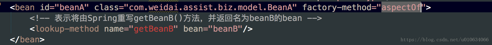

(转)Spring源码解析(四)Spring是怎么处理BeanDefinition的？
上一篇文章中分析了 BeanDefinition是怎么被解析出来的，在这一篇文章中我们主要看下 解析完了之后所做的事情；
一、DefaultBeanDefinitionDocumentReader
源码入口
processBeanDefinition(Element ele, BeanDefinitionParserDelegate delegate)
/**
* Process the given bean element, parsing the bean definition
* and registering it with the registry.
*/
protected void processBeanDefinition(Element ele, BeanDefinitionParserDelegate delegate) {
//这个bdHoder就是被解析完成之后的BeanDefinition；上篇分析了，这里不再赘述
BeanDefinitionHolder bdHolder = delegate.parseBeanDefinitionElement(ele);
if (bdHolder != null) {
//这里是修饰一下BeanDefinition，这里以后再单独分析；TODO...
bdHolder = delegate.decorateBeanDefinitionIfRequired(ele, bdHolder);
try {
/**注册BeanDefinition;
*1.DefaultBeanDefinitionDocumentReader里面持有XmlReaderContext readerContext;
*2.XmlReaderContext extends AbstractBeanDefinitionReader，这个类里面持有BeanDefinitionRegistry registry;注册器;registry默认实现 DefaultListableBeanFactory
*/
BeanDefinitionReaderUtils.registerBeanDefinition(bdHolder, getReaderContext().getRegistry());
}
catch (BeanDefinitionStoreException ex) {
getReaderContext().error("Failed to register bean definition with name '" +
bdHolder.getBeanName() + "'", ele, ex);
}
// 通知 注册事件已经完成；但是这个好像是个空实现，那么这个到底哪些场景会用到呢？TODO...
getReaderContext().fireComponentRegistered(new BeanComponentDefinition(bdHolder));
}
}
二、BeanDefinitionReaderUtils
TODO…
registerBeanDefinition(BeanDefinitionHolder definitionHolder, BeanDefinitionRegistry registry)
public static void registerBeanDefinition(
BeanDefinitionHolder definitionHolder, BeanDefinitionRegistry registry)
throws BeanDefinitionStoreException {
// Register bean definition under primary name.
String beanName = definitionHolder.getBeanName();
registry.registerBeanDefinition(beanName, definitionHolder.getBeanDefinition());
// Register aliases for bean name, if any.
String[] aliases = definitionHolder.getAliases();
if (aliases != null) {
for (String alias : aliases) {
registry.registerAlias(beanName, alias);
}
}
}
三、DefaultListableBeanFactory
TODO
registerBeanDefinition(String beanName, BeanDefinition beanDefinition)
/** 缓存所有的BeanDefinition */
private final Map<String, BeanDefinition> beanDefinitionMap = new ConcurrentHashMap<String, BeanDefinition>(256);
/** 已注册的所有 BeanDefinition name*/
private volatile List<String> beanDefinitionNames = new ArrayList<String>(256);
/** List of names of manually registered singletons, in registration order */
/** 单例对象注册清单 */
private volatile Set<String> manualSingletonNames = new LinkedHashSet<String>(16);
/** Cached array of bean definition names in case of frozen configuration */
private volatile String[] frozenBeanDefinitionNames;
@Override
public void registerBeanDefinition(String beanName, BeanDefinition beanDefinition)
throws BeanDefinitionStoreException {
Assert.hasText(beanName, "Bean name must not be empty");
Assert.notNull(beanDefinition, "BeanDefinition must not be null");
if (beanDefinition instanceof AbstractBeanDefinition) {
try {
/**
*1.验证definition,如果getMethodOverrides().isNotEmpty() && getFactoryMethodName() != null 就抛异常；
MethodOverrides在我们上一篇文章中的LookupOverride、ReplaceOverride被设置过；这行代码意思是如果设置了 MethodOverrides效果，则不能同时存在工厂方法；如下图中同时设置就会报错了
*2.if (hasBeanClass()) {
prepareMethodOverrides();
}
如果(this.beanClass instanceof Class) 这个beanClass在上一篇了解到，创建BeanDefinition的时候如果有ClassLoader就通过返回拿到Class对象；
*3.bd的overrides做一些处理；
*/
((AbstractBeanDefinition) beanDefinition).validate();
}
catch (BeanDefinitionValidationException ex) {
throw new BeanDefinitionStoreException(beanDefinition.getResourceDescription(), beanName,
"Validation of bean definition failed", ex);
}
}
BeanDefinition oldBeanDefinition;
oldBeanDefinition = this.beanDefinitionMap.get(beanName);
if (oldBeanDefinition != null) {
if (!isAllowBeanDefinitionOverriding()) {
throw new BeanDefinitionStoreException(beanDefinition.getResourceDescription(), beanName,
"Cannot register bean definition [" + beanDefinition + "] for bean '" + beanName +
"': There is already [" + oldBeanDefinition + "] bound.");
}
else if (oldBeanDefinition.getRole() < beanDefinition.getRole()) {
// e.g. was ROLE_APPLICATION, now overriding with ROLE_SUPPORT or ROLE_INFRASTRUCTURE
if (this.logger.isWarnEnabled()) {
this.logger.warn("Overriding user-defined bean definition for bean '" + beanName +
"' with a framework-generated bean definition: replacing [" +
oldBeanDefinition + "] with [" + beanDefinition + "]");
}
}
else if (!beanDefinition.equals(oldBeanDefinition)) {
if (this.logger.isInfoEnabled()) {
this.logger.info("Overriding bean definition for bean '" + beanName +
"' with a different definition: replacing [" + oldBeanDefinition +
"] with [" + beanDefinition + "]");
}
}
else {
if (this.logger.isDebugEnabled()) {
this.logger.debug("Overriding bean definition for bean '" + beanName +
"' with an equivalent definition: replacing [" + oldBeanDefinition +
"] with [" + beanDefinition + "]");
}
}
//覆盖注册
this.beanDefinitionMap.put(beanName, beanDefinition);
}
else {
//判断factory's 是否开始创建了;什么时候开始呢？TODO...回头单独分析
if (hasBeanCreationStarted()) {
// Cannot modify startup-time collection elements anymore (for stable iteration)
synchronized (this.beanDefinitionMap) {
//注册beanDefinition到map中
this.beanDefinitionMap.put(beanName, beanDefinition);
//下面这种处理为什么不直接this.beanDefinitionNames.add(beanName)？
//大概是因为List是线程不安全的把；如果有线程在遍历，这里修改就会有问题了，所以直接新建一个list赋值过去
List<String> updatedDefinitions = new ArrayList<String>(this.beanDefinitionNames.size() + 1);
updatedDefinitions.addAll(this.beanDefinitionNames);
updatedDefinitions.add(beanName);
this.beanDefinitionNames = updatedDefinitions;
//判断 manualSingletonNames单例对象中是否存在相同的对象名，如果存在就表示不是单例对象了，就在manualSingletonNames中remove掉
if (this.manualSingletonNames.contains(beanName)) {
Set<String> updatedSingletons = new LinkedHashSet<String>(this.manualSingletonNames);
updatedSingletons.remove(beanName);
this.manualSingletonNames = updatedSingletons;
}
}
}
else {
// 还在启动注册阶段
this.beanDefinitionMap.put(beanName, beanDefinition);
this.beanDefinitionNames.add(beanName);
this.manualSingletonNames.remove(beanName);
}
this.frozenBeanDefinitionNames = null;
}
if (oldBeanDefinition != null || containsSingleton(beanName)) {
resetBeanDefinition(beanName);
}
}
AbstractBeanDefinition validate()
public void validate() throws BeanDefinitionValidationException {
if (!getMethodOverrides().isEmpty() && getFactoryMethodName() != null) {
throw new BeanDefinitionValidationException(
"Cannot combine static factory method with method overrides: " +
"the static factory method must create the instance");
}
if (hasBeanClass()) {
prepareMethodOverrides();
}
}
/**
* Validate and prepare the method overrides defined for this bean.
* Checks for existence of a method with the specified name.
* @throws BeanDefinitionValidationException in case of validation failure
*/
public void prepareMethodOverrides() throws BeanDefinitionValidationException {
// Check that lookup methods exists. 查看是否有设置lookup
MethodOverrides methodOverrides = getMethodOverrides();
if (!methodOverrides.isEmpty()) {
Set<MethodOverride> overrides = methodOverrides.getOverrides();
synchronized (overrides) {
for (MethodOverride mo : overrides) {
prepareMethodOverride(mo);
}
}
}
}
protected void prepareMethodOverride(MethodOverride mo) throws BeanDefinitionValidationException {
//查找这个beanClass的所有跟mo.getMethodName()相等的描述方法、接口数量
int count = ClassUtils.getMethodCountForName(getBeanClass(), mo.getMethodName());
if (count == 0) {
throw new BeanDefinitionValidationException(
"Invalid method override: no method with name '" + mo.getMethodName() +
"' on class [" + getBeanClassName() + "]");
}
//如果只有一个 则更新overloaded的属性为false；
else if (count == 1) {
// Mark override as not overloaded, to avoid the overhead of arg type checking.
//标记这个mo不是 重载，而是覆盖；避免参数类型检查的开销。默认是true
mo.setOverloaded(false);
}
}

四、总结
上面只是简单的分析了一下BeanDefinition的去处，发现BeanDefinition后来是注册到了DefaultListableBeanFactory中；这个存放了所有的BeanDefinition引用； 上面还有一些问题没有说清楚；
- delegate.decorateBeanDefinitionIfRequired 修饰BeanDefinition分析？
- hasBeanCreationStarted() 判断是否有bean一句开始创建了？
- registerSingleton 注册单例分析？
- getReaderContext().fireComponentRegistered(new BeanComponentDefinition(bdHolder)); 这个通知事件怎么使用呢？
上面等下次有时间再单独分析；